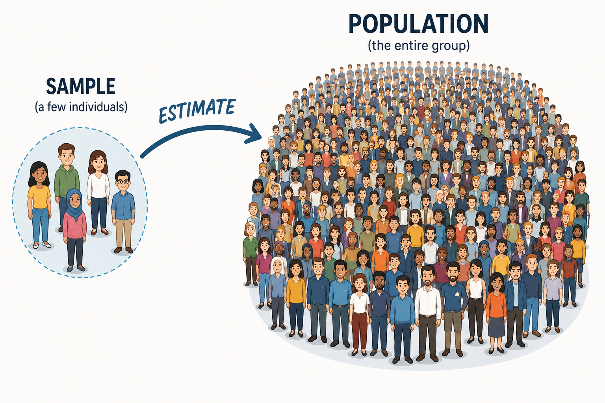
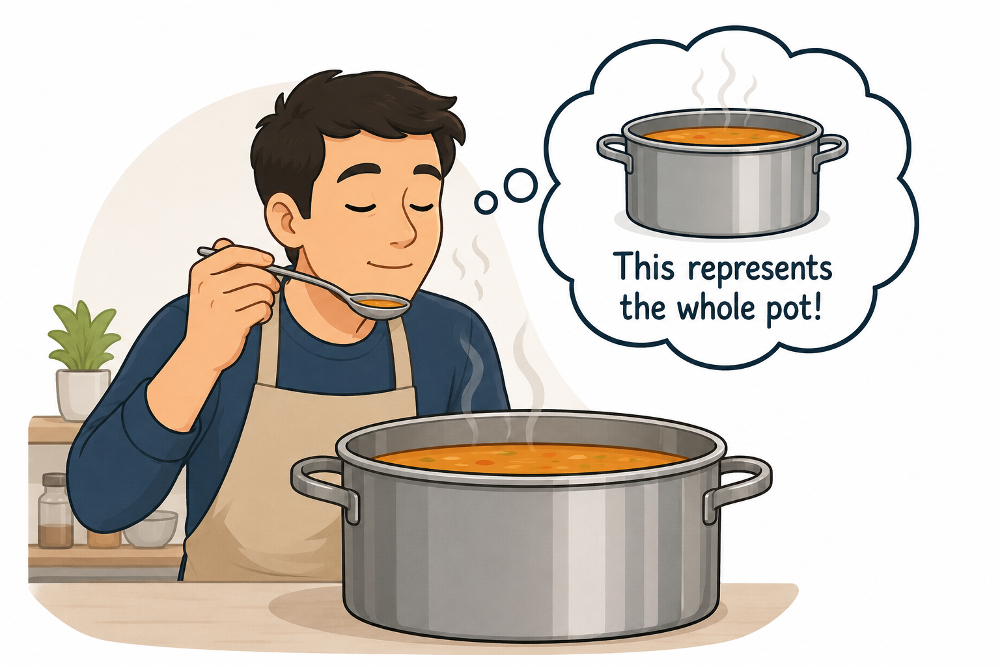
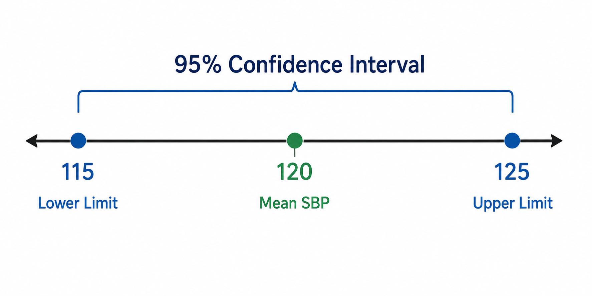
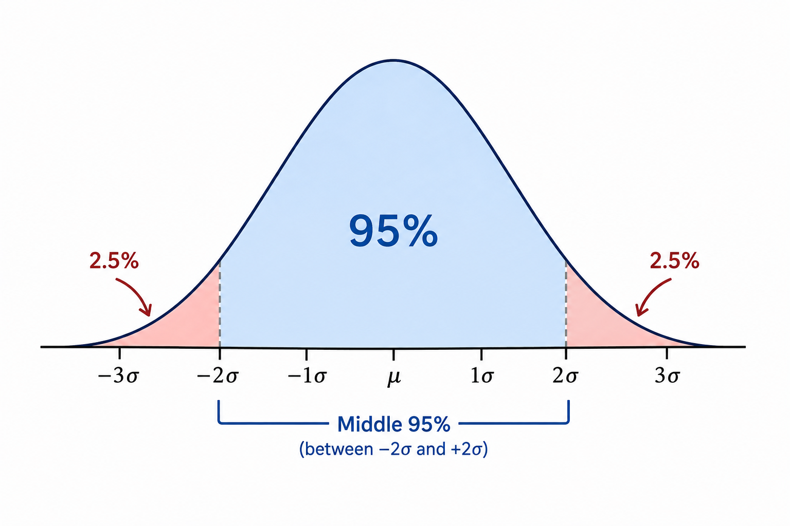
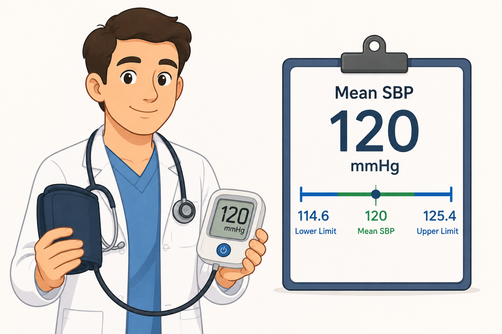
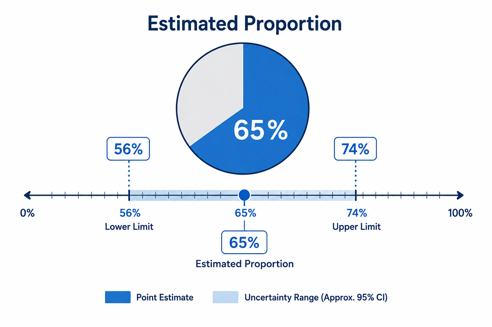
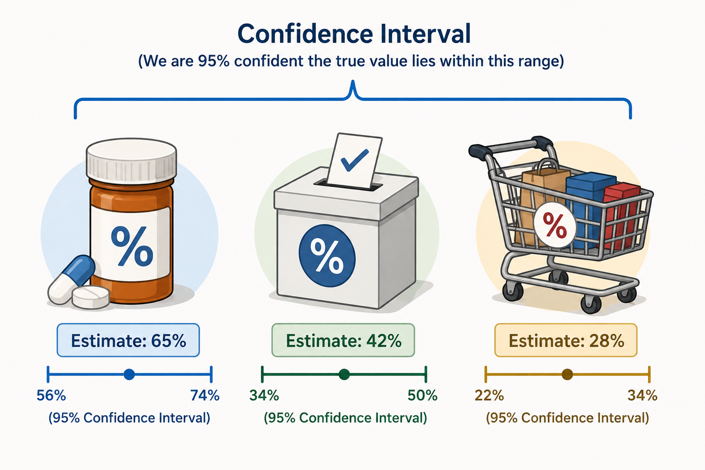

Estimation is one of the two main tools of statistical inference — the process of drawing conclusions about a population based on data collected from a sample. Instead of measuring every single person or item in a population, researchers study a smaller group and use that data to make an educated guess about the whole.

Imagine trying to find the average blood pressure of an entire country's population. Measuring every single person is impossible, so instead we measure a sample — say, 30 patients — and use that sample to estimate the true population value.
This is the core idea of inference: we move from a statistic (calculated from the sample) to a parameter (the true, usually unknown, value in the population).
There are two ways to present an estimate:
A point estimate alone doesn't tell you how much uncertainty surrounds it. A confidence interval does — it communicates both the best guess and the precision of that guess.

A quick note on notation, since it appears throughout the calculations below:
Nearly every confidence interval follows the same basic structure:
Point Estimate ± (Reliability Coefficient × Standard Error)
The reliability coefficient depends on how confident you want to be, and comes from the standard normal (z) distribution:
| Confidence Level | Reliability Coefficient (z) |
|---|---|
| 90% | 1.65 |
| 95% | 1.96 |
| 99% | 2.58 |
A higher confidence level requires a larger coefficient, which produces a wider interval — more certainty comes at the cost of precision.


Suppose systolic blood pressure (SBP) was measured in 30 patients, giving a mean of 120 mmHg and a standard deviation of 15 mmHg. To estimate the population mean with 95% confidence:
120 ± 1.96 × (15 / √30) 120 ± 1.96 × 2.739 95% CI: 114.6, 125.4
Interpretation: we are 95% confident that the true population mean SBP lies between 114.6 and 125.4 mmHg.

Estimation also applies to proportions or percentages — for example, the proportion of a population with a disease. In a study of drug users, 130 out of 200 tested HIV positive. To estimate the population proportion with 99% confidence:
p̂ = 130/200 = 0.65 0.65 ± 2.58 × √(0.65 × 0.35 / 200) 99% CI: 0.5623, 0.7377
Interpretation: we are 99% confident that the true population percentage of HIV-positive individuals is between 56.23% and 73.77%.
Note: the normal approximation for proportions only works well when both np and n(1-p) are greater than 5.

A single number is rarely the whole story. Whenever you report a mean or a proportion from a sample, pair it with a confidence interval so readers know not just your best guess, but how much uncertainty surrounds it.

Report your point estimate. Compute your confidence interval. Interpret with care.